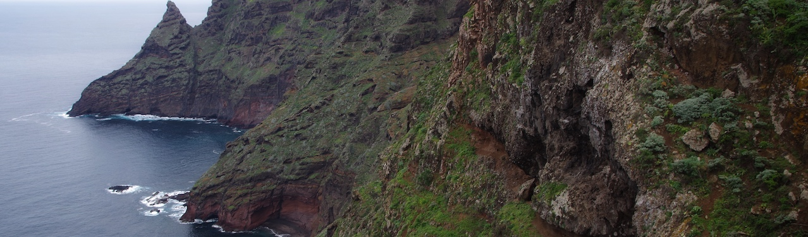

My first attempt at a procedurally generated was just some brute force thing that I created for Dungen. What I really wanted to do was to try to create a outside world - I find those types of games far more appealing. I quickly stumbled upon the procedural generation sub and, like every other noob, got excited about Perlin noise.
I wanted to restrict myself to a 2D world and create something that looks something like the glorious British Isles: Scotland and Suffolk in particular... I took some resources from Kenney, made a load of modifications, and read through Amit Patel's tutorial. Making a 2D map with different 'heights' is something that I've never concerned myself with before. But I can remember the joy of Zelda and Pokemon on the GameBoy - so the map is constructed to look like those games: terraces where the character would traverse them from the side facing the player.
The Source code is on github
I quite like Go, for me it feels like scripting with C. It was useful to have standard library for image manipulation and though Go is designed for concurrency, it wasn't difficult to run multiple threads across multiple cores simultaneously too. The drawbacks, similar to C, are having to write boiler code for anything algorithmic! Package management is also a bit odd... but it seems both dependencies and generics are something that are being addressed. I really don't understand how/why these were overlooked before. Or why the official compiler doesn't make use of GCC or LLVM...